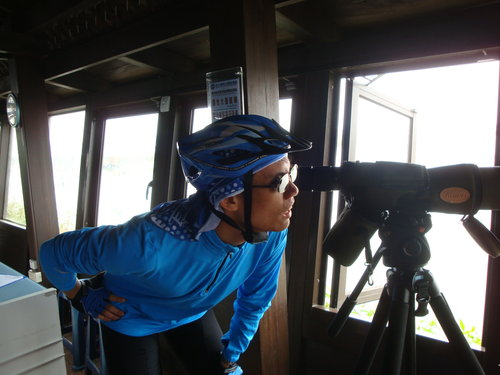
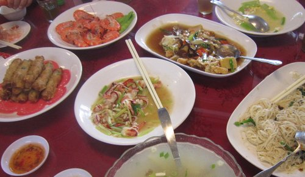
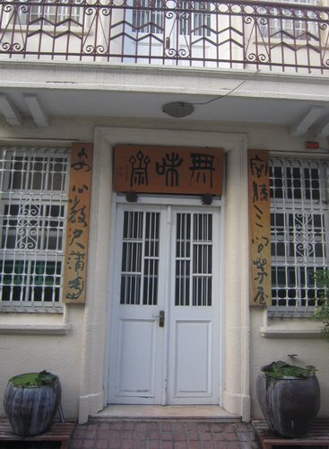
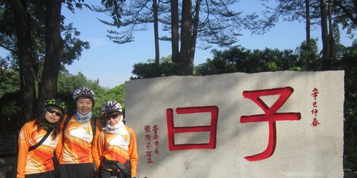

2012.12.7 台南七股行
出遊前兩天天氣尚未全然放晴，加上又有冷氣團，所以頗令人擔心，不過好險天氣多雲涼爽，超適合騎乘腳踏車的。這次最特別的是河東獅將體驗台鐵、鐵馬，「兩鐵」的運行方式挑戰此次台南行，因受限於火車的時間，前一天應該有不少人擔心而沒睡好，小妹我就是其中之一，睡眼惺忪的到鳳山宿舍與法官會合，柏宏、鄭瑋、琬萍、我最親愛的小燕姐、還有遠從台中下來熱情參與的珮瑛陸陸續續牽著腳踏車下來，集合完畢後由柏宏帶我們沿著曹公圳及護城河而建的環程自行車道朝鳳山火車站出發，沿途欣賞著美麗的風景及砲台，一邊聽著柏宏介紹相關歷史，但因受限於時間所以沒有停留下來拍照，只好用眼睛收藏相關美景嚕。〈以下圖片從網路轉載〉
到達鳳山火車站後，搭乘火車前往高雄火車站與宗揚、宗霖、峻明、宗興、MARTIN（英文老師）、亮文、雲龍會合，整個車廂幾乎被河東獅成員及腳踏車占滿，浩浩蕩蕩前往台南，在大家談天、拍照過程中，時間飛快瞬間就抵達台南嚕。
〈鳳山宿舍出發成員〉
曹公 〈高雄車站出發成員〉
圳及護城河而建的環城自
〈河東獅台鐵鐵馬行程大合照〉

〈從台中熱情參與的珮瑛〉 〈台鐵鋼管舞〉
〈整個車廂被河東獅占滿嚕〉 〈師生合照〉
到達台南後，就看到本次活動最辛苦規劃路程之家偉在門口熱情迎接大家，貞秀與雲龍則先行前往「阿堂虱目魚鹹粥」幫忙點餐，大家在火車站整理並合拍團體照後，就前往西門圓環，品嚐由友人熱情贊助味美鮮甜、現點現料理的鹹粥，綜合鹹粥裡滿滿的虱目魚、土鮀魚，加上海鮮精華十足的湯頭，真是美味又順口，加上其他風味小菜：外酥內嫩之鮮美煎魚肚、Q彈而且富有膠質之乾燙魚皮及味道特別的香腸，讓大家充滿活力迎接接下來的挑戰。
〈出發前往阿堂鹹粥品嚐道地美食唷〉
品嚐道地美味小吃後，前往約23公里 之七股欣賞保育類動物黑面琵鷺，騎乘中迎著涼風邊欣賞沿路美景，感覺真是超級舒服，但23公里 的挑戰也考驗大家的腳力及體力，所以在中途點7-11讓大家可以短暫的喘息休息一下，先行抵達7-11後就看到雲龍大哥拿出整套設備泡茶、泡咖啡，在泡完的同時，所有成員也陸續抵達，在疲憊的時候喝上熱熱的茶及咖啡提神，感覺超級溫暖又幸福，全身充滿電力迎接後半段挑戰，在此真要感謝辛苦的雲龍大哥。
補充完電力後，因時間有點遲延，因此大家加緊腳步前往「黑面琵鷺生態展示館」，沿著台南濱海海岸線騎乘，因暢行無阻不知不覺時速愈飆愈高，飆到35公里 享受馳騁快感，到達目的地後透過影片介紹讓大家更瞭解「黑面琵鷺」之棲地及特色，接著前往台江透過望遠鏡欣賞保育類動物黑面琵鷺。

欣賞完黑面琵鷺後，前往家偉車友所開之東香台菜海鮮餐廳品嚐美食，美味的鮮蚵麵線、特殊風味之招牌草蝦捲、紅蝦、魚肉瓜棉湯、香芹蘭花蚌、絲瓜、宮保雞丁等美食令人垂涎三尺，令人欽佩的是總舖師不只善於廚藝，愛心公益更不落人後，曾以單騎公益環島擁抱台灣，牆上掛著滿滿的愛心公益活動報導及合影，因宗揚要趕回去寫判決，所以先行離開，因此在品嚐雲龍所泡的回甘好茶及老闆提供「COOKIE BAKETY」之手工餅乾之人間享受後，就目送宗揚、MARTIN、雲龍離開嚕。

滿足口腹之慾之後，前往全台唯一主祀風神之重要文化古蹟「風神廟」及雕刻精細工整、壯麗挺拔氣勢之府城出入門戶『接官亭石坊』Ｍ台南僅存四座石坊之一〉，風神是佑民一帆風順之神明，其旁有雷神索爾之「雷神」〈為打擊犯罪、懲奸罰惡之神〉及雷公配偶「電母」，每逢雷公打電之前，電母就發出一道閃電，照明是非善惡，以免因雷神暴躁不分皂白發雷打死之冤情再生。
〈風神〉
〈接官亭石坊〉
〈電母〉 〈雷神〉
緊接著前往台南最有氣質之『神農街』，充滿復古懷舊之風格，走在古意盎然的老街，透過老街的樣貌緬懷前百年前清代、日殖、光復期間不同的民舍面貌。

〈充滿復古風味的建築〉
〈超帥氣的站姿〉
接著來到臺灣四大名園之一的「吳園」，一開始印入眼前的是充滿歐洲建築風格之公會堂，繞道後面彷彿回到古代，清代的庭園建築風景真是唯美，隨著步道又可見到日式的柳屋，在此可以體會截然不同的建築風格。
最後來到老字號的傳統冰店「江水號」品嚐貞秀請客之道地的八寶湯（冰），碗內滿滿的食材，湯圓很Q、芋頭超綿密。加上糖水甜度不高，簡直一大滿足，還有冬季限定的米糕粥，濃濃的米香及龍眼香氣，每一口滿滿的密甜香，加上還有充滿芋頭的香氣撲鼻、料好實在的台南傳統小吃「芋粿」，簡直令人芋罷不能。
品嚐道地甜點後出發前往鳳山火車站，沿路充滿聖誕氣息，讓疲憊的心瞬間也愉快起來，中途在孔廟短暫休息，看到不同與白天的風格，超唯美的。

帶著甜蜜的心情回高雄，因騎乘路途遙遠加上某些人睡眠不足，有許多人在車上昏昏欲睡，這次的台南行雖然有點累，但充滿超多人情味，超級滿分的之美食台鐵鐵馬鐵腿行。
賀台鐵、鐵馬、鐵腿之三鐵之旅圓滿成功~ ~